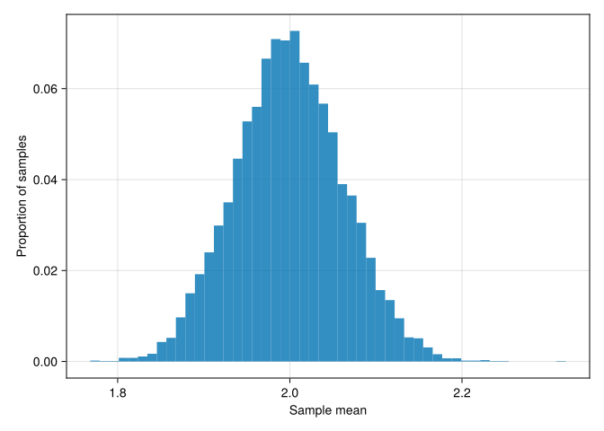
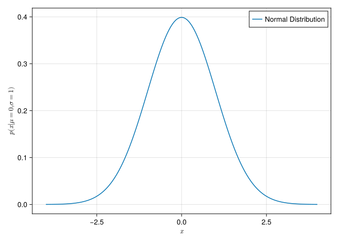
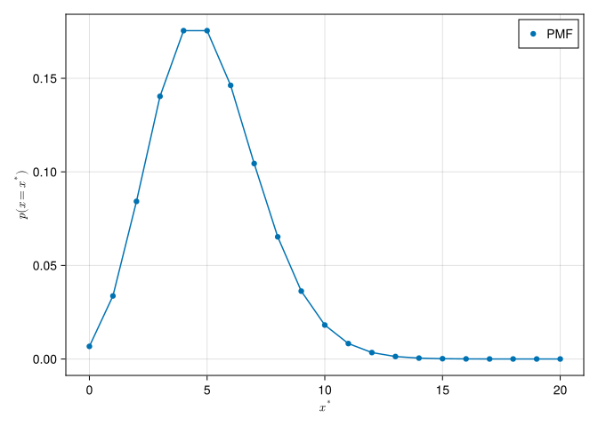
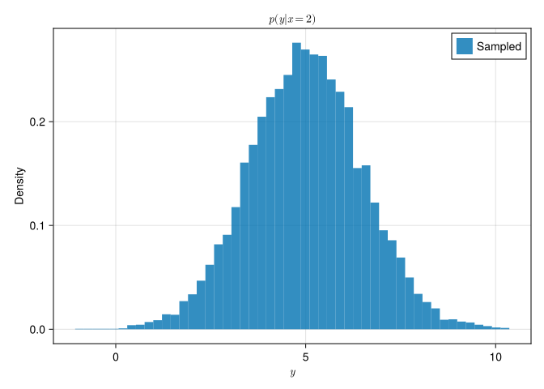
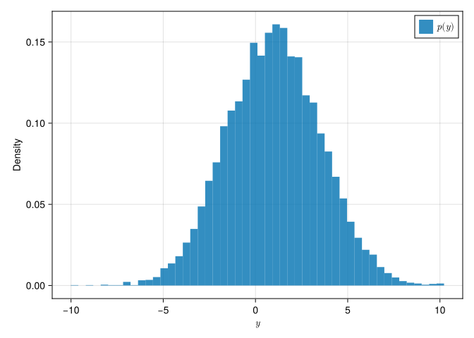
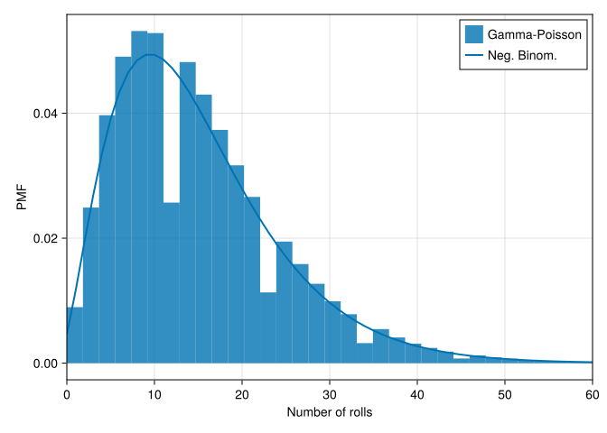

1 Basics of Probability and Statistics
Learning Objectives
- Understand foundational probability concepts (random variables, distributions, moments).
- Apply descriptive and inferential statistical methods to climate-related datasets.
- Recognize when and why certain probability models are appropriate for climate variables.
Topics
- Probability distributions (e.g., Normal, Gamma, Exponential) and their properties
- Descriptive statistics (mean, variance, quantiles)
- Basic hypothesis testing, p-values, and confidence intervals
- Common pitfalls in statistical analysis of climate/earth science data
1.1 Old stuff
1.2 What is probability?
1.3 Useful Probability distributions
1.3.1 The Normal distribution
The Normal (Gaussian) distribution has probability distribution function :
\[ p(y | \mu, \theta) = \frac{1}{\sigma\sqrt{2\pi}} \exp \left( -\frac{1}{2}\left( \frac{x-\mu}{\sigma} \right)^{\!2} \, \right) \]
- Mean \(\mu\)
- Median equal to mean
- Variance \(\sigma^2\)
- Symmetric
1.3.2 Central limit theorem
The central limit theorem says that the sum of many independent random variables is approximately normally distributed.
We can see this with an example:
- For each sample \(i = 1, \ldots, N\):
- Draw
Jdraws from a non-Gaussian distribution \(\mathcal{D}\) - Take the mean and save it as \(\bar{y}_i\)
- Draw
- Plot the distribution of \(\bar{y}_i\)
dist = Gamma(2, 1) # a non-Gaussian distribution
N = 10_000 # number of samples
J = 500 # draws per sample
ȳ = [
mean(rand(dist, J)) for _ in 1:N
]
hist(
ȳ;
bins=50,
axis=(
xlabel="Sample mean",
ylabel="Proportion of samples",
),
normalization=:probability
)- 1
-
To type
ȳ, typeythen type\barand hittab. Julia allows unicode (or emojis) in variable names - 2
-
To type
∈, type\inand hittab. The_isn’t doing anything special and we could name itior 😶 or whatever we want but_suggests it’s a throwaway - 3
- This is another list comprehension
┌ Warning: Found `resolution` in the theme when creating a `Scene`. The `resolution` keyword for `Scene`s and `Figure`s has been deprecated. Use `Figure(; size = ...` or `Scene(; size = ...)` instead, which better reflects that this is a unitless size and not a pixel resolution. The key could also come from `set_theme!` calls or related theming functions.
└ @ Makie ~/.julia/packages/Makie/Y3ABD/src/scenes.jl:238
1.3.3 Notation
We will get tired of writing
\[ p(y | \mu, \theta) = \frac{1}{\sigma\sqrt{2\pi}} \exp \left( -\frac{1}{2}\left( \frac{x-\mu}{\sigma} \right)^{\!2} \, \right) \]
Instead, we will often use shorthand:
\[ y \sim \mathcal{N}(\mu, \sigma^2) \]
1.3.4 Normal PDF
let
dist = Normal(0, 1)
x = range(-4, 4, 200)
y = pdf.(dist, x)
fig = Figure()
ax = Axis(fig[1, 1],
xlabel=L"$x$",
ylabel=L"$p(x | \mu=0, \sigma=1)$"
)
lines!(ax, x, y, label="Normal Distribution")
axislegend()
fig
end┌ Warning: Found `resolution` in the theme when creating a `Scene`. The `resolution` keyword for `Scene`s and `Figure`s has been deprecated. Use `Figure(; size = ...` or `Scene(; size = ...)` instead, which better reflects that this is a unitless size and not a pixel resolution. The key could also come from `set_theme!` calls or related theming functions.
└ @ Makie ~/.julia/packages/Makie/Y3ABD/src/scenes.jl:238
L"<string>"allows us to use LaTeX in strings- This notation specifies the values of \(\mu\) and \(\sigma\)
1.3.5 Bernoulli distribution
A Bernoulli distribution models a coin flip.
1.3.6 Binomial distribution
A Binomial distribution models the distribution of n consecutive flips of the same coin
1.3.7 Multinomial distribution
The Multinomial extends the Binomial to multiple categories. Note that p is a vector. If there are 2 categories (\(K=2\)), it’s just the binomial with \(p_\text{multinomial} = [p, 1-p]\).”
1.3.8 Poisson distribution
The Poisson distribution is used to model count data. It is the limit of a Binomial distribution with \(p=\lambda/N\), as \(N \rightarrow \infty\).
A Poisson distribution has mean and variance equal to \(\lambda\).
1.3.9 Negative binomial distribution
The NegativeBinomaial distribution relaxes the Poisson’s assumotion that \(\text{mean} = \text{variance}\).
This distribution models the number of successes in a sequence of independent and identically distributed Bernoulli trials with probability p before a specified (non-random) number of failures (r) occurs. For example, we can define rolling a 6 on a dice as a failure, and rolling any other number as a success, and ask how many successful rolls will occur before we see the third failure (p = 1/6 and r = 3).
1.3.10 What other distributions do you know?
. . .
- Uniform
- Exponential
- Gamma (see above)
- Beta
- Pareto
- Student t
- Boltzmann
- Many more!
1.4 Statistics
1.4.1 Mean
The mean of a sample is just the sample average: \[ \bar{y} = \frac{1}{N} \sum_{i=1}^N y_i \]
. . .
The mean of a distribution is the expected value of the distribution: \[ \mathbb{E}(u) = \int u p(u) \, du \]
1.4.2 Variance
Variance measures how points differ from the mean
. . .
You may be familiar with sample variance: \[ S^2 = \frac{\sum_{i=1}^n (x_i - \bar{x})^2}{n - 1} \]
. . .
For a distribution: \[ \mathbb{V}(u) = \int (u - \mathbb{E}(u))^2 p(u) \, du \] or, for a vector \[ \mathbb{V}(u) = \int (u - \mathbb{E}(u)) (u - \mathbb{E}(u))^T p(u) \, du \]
1.5 PDFs and CDFs
1.5.1 PDF and CDF
If \(F_X\) is the cumulative distribution function (CDF) of \(X\) and \(f_X\) is the probability density function (PDF) of \(X\), then: \[ F_X ( x ) = \int_{-\infty}^x f_X(u) \, du, \]
and (if \(f_X\) is continuous at \(x\) which it typically will be) \[ f_{X}(x)={\frac {d}{dx}}F_{X}(x). \] A useful property is \[ \Pr[a\leq X\leq b]=\int _{a}^{b}f_{X}(x)\,dx \]
We can only talk about the probability that \(y\) is in some interval \([a, b]\), which is given by the integral of the PDF over that interval. The probability that \(y\) takes on the value \(y^*\), written \(p(y=y^*)\), is zero.
1.5.2 PDF example
Simple example to illustrate that \[ F_X(2) = \int_{-\infty}^2 f_X(u) \, du \]
We will use a standard Normal distribution as an example
dist = Normal() #
f(x) = pdf(dist, x) #
approx = quad_trap(f, -100, 2, 1000) #
exact = cdf(dist, 2)
approx, exact- 1
- Mean 0 and standard deviation 1 by default
- 2
-
pdf(d, x)tells us the probability density function of distributiondevaluated atx - 3
-
quad_trapis a trapezoidal approximation of the integral with arguments: function, lower bound, upper bound, and number of points
(0.9771562639858903, 0.9772498680518208)1.5.3 PMFs
x = 0:20
y = pdf.(Poisson(5), x)
fig = Figure()
ax = Axis(fig[1, 1],
xlabel=L"x^*",
ylabel=L"p(x=x^*)"
)
scatter!(ax, x, y; label="PMF")
lines!(ax, x, y)
axislegend()
fig┌ Warning: Found `resolution` in the theme when creating a `Scene`. The `resolution` keyword for `Scene`s and `Figure`s has been deprecated. Use `Figure(; size = ...` or `Scene(; size = ...)` instead, which better reflects that this is a unitless size and not a pixel resolution. The key could also come from `set_theme!` calls or related theming functions.
└ @ Makie ~/.julia/packages/Makie/Y3ABD/src/scenes.jl:238
1.6 Joint, marginal, and conditional distributions
1.6.1 Bayes’ Rule
\[ p(\theta, y) = p(\theta) p(y | \theta) \] and thus \[ p(\theta | y) = \frac{p(\theta, y)}{p(y)} = \frac{p(\theta) p(y | \theta)}{p(y)} \] generally: \[ p(\theta | y) \propto p(\theta) p(y | \theta) \]
1.6.2 Marginal probability
Probability of event \(A\): \(\Pr(A)\)
. . .
We will write the marginal probability density function as \[ p(\theta) \quad \text{or} \quad p(y) \]
1.6.3 Joint probability
Probability of events \(A\) and \(B\): \(\Pr(A \& B)\)
. . .
\[ p(\theta, y) \]
1.6.4 Conditional probability
Probability of event \(A\) given event \(B\): \(\Pr(A | B)\)
. . .
\[ p(\theta | y) \quad \text{or} \quad p(y | \theta) \]
1.6.5 Example: two-dice wager
A gambler presents you with an even-money wager. You will roll two dice, and if the highest number showing is one, two, three or four, then you win. If the highest number on either die is five or six, then she wins. Should you take the bet?
1.7 Example: linear regression
1.7.1 Overview
Standard linear regression model, let’s assume \(x \in \mathbb{R}\) for simplicity (1 predictor): \[ y_i = ax_i + b + \epsilon_i \] where \(\epsilon_i \sim N(0, \sigma^2)\).
1.7.2 Conditional distribution of \(y_i\)
The conditional probability density of \(y_i\) given \(x_i\) is \[ p(y_i | x_i, a, b, \sigma) = N(ax_i + b, \sigma^2) \] which is a shorthand for writing out the full equation for the Normal PDF. We can (and often will) write this as \[ y_i \sim \mathcal{N}(ax_i + b, \sigma^2) \] Finally, we will sometimes write \(p(y_i | x_i)\) as a shorthand for \(p(y_i | x_i, a, b, \sigma)\). While fine in many circumstances, we should take care to make sure we are extremely clear about what parameters we are conditioning on.
1.7.3 Marginal distribution of \(y_i\)
The marginal probability density of \(y_i\) is \[ p(y_i | a, b, \sigma) = \int p(y_i | x_i, a, b, \sigma) p(x_i) \, dx_i \] where \(p(x_i)\) is the probability density of \(x_i\).
1.7.4 Joint distribution of \(y_i\) and \(x_i\)
The joint probability density of \(y_i\) and \(x_i\) is \[ p(y_i, x_i | a, b, \sigma) = p(y_i | x_i, a, b, \sigma) p(x_i) \] where \(p(x_i)\) is the probability density of \(x_i\).
1.7.5 Simulation
. . .
If \(x=2\), we can simulate from the conditional distribution of \(y\):
N_sim = 10_000
x = 2
y = rand(Normal(m * x + b, σ), N_sim)
fig = Figure()
ax = Axis(fig[1, 1],
title=L"p(y | x=2)",
xlabel=L"y",
ylabel="Density"
)
hist!(ax, y; bins=50, normalization=:pdf, label="Sampled")
axislegend()
fig┌ Warning: Found `resolution` in the theme when creating a `Scene`. The `resolution` keyword for `Scene`s and `Figure`s has been deprecated. Use `Figure(; size = ...` or `Scene(; size = ...)` instead, which better reflects that this is a unitless size and not a pixel resolution. The key could also come from `set_theme!` calls or related theming functions.
└ @ Makie ~/.julia/packages/Makie/Y3ABD/src/scenes.jl:238
If \(x \sim N(0, 1)\), then we can simulate from the joint distribution of \(x\) and \(y\):
x = rand(Normal(0, 1), 10_000)
y = [rand(Normal(m * xᵢ + b, σ)) for xᵢ in x] #
fig = Figure()
ax = Axis(fig[1, 1],
xlabel=L"x",
ylabel=L"y"
)
scatter!(ax, x, y; label=L"p(x,y)")
axislegend()
fig- 1
-
A list comprehension here is less elegant than writing
rand.(Normal.(m .* x .+ b, σ))but it is easy to read. The results are the same.
┌ Warning: Found `resolution` in the theme when creating a `Scene`. The `resolution` keyword for `Scene`s and `Figure`s has been deprecated. Use `Figure(; size = ...` or `Scene(; size = ...)` instead, which better reflects that this is a unitless size and not a pixel resolution. The key could also come from `set_theme!` calls or related theming functions.
└ @ Makie ~/.julia/packages/Makie/Y3ABD/src/scenes.jl:238
Finally, assuming the same distribution, we can simulate from the marginal distribution of \(y\):
fig = Figure()
ax = Axis(fig[1, 1],
xlabel=L"y",
ylabel="Density"
)
hist!(ax, y; bins=50, normalization=:pdf, label=L"p(y)")
axislegend()
fig┌ Warning: Found `resolution` in the theme when creating a `Scene`. The `resolution` keyword for `Scene`s and `Figure`s has been deprecated. Use `Figure(; size = ...` or `Scene(; size = ...)` instead, which better reflects that this is a unitless size and not a pixel resolution. The key could also come from `set_theme!` calls or related theming functions.
└ @ Makie ~/.julia/packages/Makie/Y3ABD/src/scenes.jl:238
1.8 Example: negative binomial as a mixture
1.8.1 Overview
The Negative Binomial distribution (see last lecture) can be interpreted as a Gamma-Poisson mixture:
\[ \begin{align} y &\sim \textrm{Poisson}(\lambda) \\ \lambda &\sim \textrm{Gamma}\left(r, \frac{p}{1-p} \right) \end{align} \]
1.8.2 Mathematical derivation
We can show mathematically that if \(y ~ \textrm{Negative Binomial}(r, p)\), that is equivalent to the mixture model \(y ~ \textrm{Poisson}(\lambda)\) and \(\lambda ~ \textrm{Gamma}(r, p / (1 - p))\). \[ \begin{align} & \int_0^{\infty} f_{\text {Poisson }(\lambda)}(y) \times f_{\operatorname{Gamma}\left(r, \frac{p}{1-p}\right)}(\lambda) \mathrm{d} \lambda \\ & = \int_0^{\infty} \frac{\lambda^y}{y !} e^{-\lambda} \times \frac{1}{\Gamma(r)}\left(\frac{p}{1-p} \lambda\right)^{r-1} e^{-\frac{p}{1-p} \lambda}\left(\frac{p}{1-p} \mathrm{~d} \lambda\right) \\ \ldots \\ &= f_{\text {Negative Binomial }(r, p)}(y) \end{align} \] For all the steps see Wikipedia.
1.8.3 Simulation example
We can see this with simulation. First we define a function to simulate from the Gamma-Poisson mixture:
function gamma_poisson(r, p)
g_dist = Gamma(r, (1 - p) / p)
λ = rand(g_dist)
p_dist = Poisson(λ)
return rand(p_dist)
endgamma_poisson (generic function with 1 method). . .
Then we can simulate from the mixture and compare to the Negative Binomial distribution:
r = 3 # number of failures
p = 1 / 6 # probability of failure
dist = NegativeBinomial(r, p)
# simulate rolls
N = 1_000_000
rolls = [gamma_poisson(r, p) for _ in 1:N]
# plot the samples
xticks = 0:1:60 # specify the bin values
fig = Figure()
ax = Axis(fig[1, 1],
xlabel="Number of rolls",
ylabel="PMF",
)
# Add histogram of simulated data
hist!(ax, rolls;
bins=length(xticks) + 1,
normalization=:pdf,
label="Gamma-Poisson",
)
# Add the PDF of the negative binomial distribution
lines!(ax, xticks, pdf.(dist, xticks);
linewidth=2,
label="Neg. Binom."
)
xlims!(ax, 0, 60)
axislegend()
fig┌ Warning: Found `resolution` in the theme when creating a `Scene`. The `resolution` keyword for `Scene`s and `Figure`s has been deprecated. Use `Figure(; size = ...` or `Scene(; size = ...)` instead, which better reflects that this is a unitless size and not a pixel resolution. The key could also come from `set_theme!` calls or related theming functions.
└ @ Makie ~/.julia/packages/Makie/Y3ABD/src/scenes.jl:238
1.8.4 So what?
I don’t need you to know all the details of this particular mixture model. What I do want you to understand is:
- We can model data using combinations of simpler distributions
- We can use simple simulation approaches to approximate more complex relationships
- For example, if we wanted to know \(\Pr(y > 10)\) when \(y \sim \text{Negative Binomial}(r, p)\) but we didn’t have a Negative Binomial distribution in our software package we could estimate our quantity of interest
- This isn’t very interesting for this model (there is an analytic solution!) but lots of models we might want to write down don’t have analytic solutions
1.9 Wrapup
1.9.1 Key ideas
- Conditional probability
- Joint probability
- Marginal probability
- Bayes’ Rule
- Likelihood
- Posterior
- Simulation methods